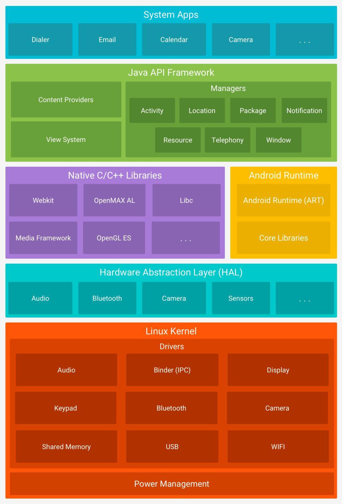

- 1.网络&算法&数据结构
- 2.Java 基础&容器&同步&设计模式
- 3.Java 虚拟机&内存结构&GC&类加载&四种引用&动态代理
- 4.Android 基础&性能优化&Framwork
- 5.Android 模块化&热修复&热更新&打包&混淆&压缩&AOP
- 6.JNI&音视频&FFmpeg&播放器
- 7.AndroidStudio&Lint&gradle&maven&CI&CD
1.网络&算法&数据结构
网络协议模型
- 应用层：负责处理特定的应用程序细节，如 HTTP、FTP、DNS
- 运输层：为两台主机提供端到端的基础通信，如 TCP、UDP
- 网络层：控制分组传输、路由选择等，如 IP
- 链路层：操作系统设备驱动程序、网卡相关接口
TCP 和 UDP 区别
- TCP 连接；可靠；有序；面向字节流；速度慢；较重量；全双工；适用于文件传输、浏览器等
全双工：A 给 B 发消息的同时，B 也能给 A 发
半双工：A 给 B 发消息的同时，B 不能给 A 发 - UDP 无连接；不可靠；无序；面向报文；速度快；轻量；适用于即时通讯、视频通话等
TCP 三次握手
- A：你能听到吗？
- B：我能听到，你能听到吗？
- A：我能听到，开始吧
- A 和 B 两方都要能确保：我说的话，你能听到；你说的话，我能听到。所以需要三次握手
TCP 四次挥手
- A：我说完了
- B：我知道了，等一下，我可能还没说完
- B：我也说完了
- A：我知道了，结束吧
- B 收到 A 结束的消息后 B 可能还没说完，没法立即回复结束标示，只能等说完后再告诉 A ：我说完了
POST 和 GET 区别
- Get 参数放在 url 中；Post 参数放在 request Body 中
- Get 可能不安全，因为参数放在 url 中
HTTP 请求过程
- DNS 域名解析
- TCP 三次握手建立连接
- 发起 HTTP 请求
HTTPS
- HTTP 是超文本传输协议，明文传输；HTTPS 使用 SSL 协议对 HTTP 传输数据进行了加密
- HTTP 默认 80 端口；HTTPS 默认 443 端口
- 优点：安全
- 缺点：费时、SSL 证书收费，加密能力还是有限的，但是比 HTTP 强多了
- 加密过程：
平衡二叉树、二叉查找树、红黑树
2.Java 基础&容器&同步&设计模式
StringBuilder、StringBuffer、+、String.concat 链接字符串：
- StringBuffer 线程安全，StringBuilder 线程不安全
- +实际上是用 StringBuilder 来实现的，所以非循环体可以直接用 +，循环体不行，因为会频繁创建 StringBuilder
- String.concat 实质是 new String ，效率也低，耗时排序：StringBuilder < StringBuffer < concat < +
Java 泛型擦除
- 修饰成员变量等类结构相关的泛型不会被擦除
- 容器类泛型会被擦除
Exception 和 Error
- Exception 和 Error 都继承自 Throwable
- Error 大部分是指不可恢复的错误状态，比如 OOM，所以也不需要捕获
- Exception 分为 CheckedException 和 UnCheckedException
- CheckedException：必须显式捕获，受编译器检查，比如 io 操作
- UnCheckedException：不用显示捕获，比如空指针、数组越界等
IO 、 NIO、 OKIO
- IO 是面向流的，一次一个字节的处理，NIO 是面向缓冲区的，一次产生或消费一个数据块
- IO 是阻塞的，NIO 是非阻塞的
- NIO 支持内存映射方式
- okio 相比 io 和 nio，api 更简单易用
- okio 支持超时机制
- okio 引入 ByteString 空间换时间提高性能
- okio 采用 segment 机制进行内存共享，节省 copy 时间消耗
ArrayList、LinkedList
ArrayList
- 基于数组实现，查找快：o(1)，增删慢：o(n)
- 初始容量为10，扩容通过 System.arrayCopy 方法
LinkedList
- 基于双向链表实现，查找慢：o(n)，增删快：o(1)
- 封装了队列和栈的调用
HashMap 、HashTable、HashSet
HashMap（允许 key/value 为 null）
- 基于数组和单向链表实现，数组是 HashMap 的主体；链表是为解决哈希冲突而存在的，存放的是key和value结合的实体
- 数组索引通过 key.hashCode（还会二次 hash） 得到，在链表上通过 key.equals 索引
- 哈希冲突落在同一个桶中时，直接放在链表头部（java1.8后放到尾部）
- JAVA 8 中链表数量大于 8 时会转为红黑树存储，查找时间由 O(n) 变为 O(logn)
- 数组长度总是2的n次方：这样就能通过位运算实现取余，从而让 index 能落在数组长度范围内
- 加载因子（默认0.75）表示添加到多少填充比时进行扩容，填充比大：链表较长，查找慢；填充比小：链表短，查找快
- 扩容时直接创建原数组两倍的长度，然后将原有对象再进行hash找到新的index，重新放
HashTable（不允许 key/value 为 null)
- 数据结构和 HashMap 一样
- 线程安全
HashSet
- 基于 HashMap 实现，元素就是 HashMap 的 key，Value 传入了一个固定值
ArrayMap、SparseArray
ArrayMap
- 基于两个数组实现，一个存放 hash；一个存放键值对
- 存放 hash 的数组是有序的，查找时使用二分法查找
- 发生哈希冲突时键值对数组里连续存放，查找时也是通过 key.equals索引，找不到时先向后再向前遍历相同hash值的键值对数组
- 扩容时不像 HashMap 直接 double，内存利用率高；也不需要重建哈希表，只需要调用 system.arraycopy 数组拷贝，性能较高
- 不适合存大量数据（1000以下），因为数据量大的时候二分查找相比红黑树会慢很多
SparseArray
- 基于 ArrayMap，key 只能是特定类型
Concurrent 集合
- ConcurrentHashMap
- 数据结构跟 HashMap 一样，还是数组加链表
- 采用 segment 分段锁技术，不像 HashTable 无脑直接同步 put 和 get 操作
- get 操作没有加锁，因为 value 用 volatile 修饰来保证可见行，性能很高
- java1.8 后去除分段锁，采用 CAS 乐观锁加 synchronized 来实现
WeakHashMap 原理
LRUCache 原理
- 基于访问顺序排序的 LinkedHashMap 实现，最近访问的会排在最后
Volatile 关键字
- 只能用来修饰变量，适用修饰可能被多线程同时访问的变量
- 相当于轻量级的 synchronized，volatitle 能保证有序性（禁用指令重排序）、可见性
- 变量位于主内存中，每个线程还有自己的工作内存，变量在自己线程的工作内存中有份拷贝，线程直接操作的是这个拷贝
- 被 volatile 修饰的变量改变后会立即同步到主内存，保持变量的可见性
双重检查单例，为什么要加 violate？
volatile想要解决的问题是，在另一个线程中想要使用instance，发现instance!=null，但是实际上instance还未初始化完毕这个问题。将instance =newInstance();拆分为3句话是。1.分配内存2.初始化3.将instance指向分配的内存空间，volatile可以禁止指令重排序，确保先执行2，后执行3
wait 和 sleep
- sleep 是 Thread 的静态方法，可以在任何地方调用
- wait 是 Object 的成员方法，只能在 synchronized 代码块中调用，否则会报 IllegalMonitorStateException 非法监控状态异常
- sleep 不会释放共享资源锁，wait 会释放共享资源锁
wait、notify、notifyAll
- 锁池：某个对象的锁已被线程A拥有，其他线程要执行该对象的 synchronized 方法获取锁时就会进入该对象的锁池，锁池中的线程回去竞争该对象的锁
- 等待池：某个线程调用了某个对象的 wait 方法，该线程就会释放该对象的锁，进入该对象的等待池，等待池中的线程不会去竞争该对象的锁
- 调用 notify 会随机唤醒等待池中的一个线程，唤醒后会进入到锁池
- 调用 notifyAll 会唤醒等待池中的所有线程，唤醒后会都进入到锁池
lock 和 synchronized
- synchronized 是 Java 关键字，内置特性；Lock 是一个接口
- synchronized 会自动释放锁；lock 需要手动释放，所以需要写到 try catch 块中并在 finally 中释放锁
- synchronized 无法中断等待锁；lock 可以中断
- Lock 可以提高多个线程进行读/写操作的效率
- 竞争资源激烈时，lock 的性能会明显的优于 synchronized
可重入锁
- 定义：已经获取到锁后，再次调用同步代码块/尝试获取锁时不必重新去申请锁，可以直接执行相关代码
- ReentrantLock 和 synchronized 都是可重入锁
公平锁
- 定义：等待时间最久的线程会优先获得锁
- 非公平锁无法保证哪个线程获取到锁，synchronized 就是非公平锁
- ReentrantLock 默认时非公平锁，可以设置为公平锁
乐观锁和悲观锁
- 悲观锁：线程一旦得到锁，其他线程就挂起等待，适用于写入操作频繁的场景；synchronized 就是悲观锁
乐观锁：假设没有冲突，不加锁，更新数据时判断该数据是否过期，过期的话则不进行数据更新，适用于读取操作频繁的场景 - 乐观锁 CAS：Compare And Swap，更新数据时先比较原值是否相等，不相等则表示数据过去，不进行数据更新
- 乐观锁实现：AtomicInteger、AtomicLong、AtomicBoolean
死锁 4 个必要条件
- 互斥
- 占有且等待
- 不可抢占
- 循环等待
Synchronized 原理
- 每个对象都有一个监视器锁：monitor，同步代码块会执行 monitorenter 开始，motnitorexit 结束
- Wait/notify 就依赖 monitor 监视器，所以在非同步代码块中执行会报 IllegalMonitorStateException 异常
六大原则（DJ单开一里）
- 开闭原则：对拓展开放，对修改关闭
- 单一指责原则：一个类指责单一
- 里氏替换原则：引用基类的地方都能替换成子类对象
- 依赖倒置原则：高层次模块不依赖低层次模块的具体实现，抽象不应该依赖细节
- 接口隔离原则：类之间的依赖关系应该建立在最小的接口上
- 迪米特原则：一个对象对其他对象应该有尽量少的了解
Java 23 种设计模式（按目的分类为：5+7+11）
1995 年 GoF（四人组）出了一本设计模式的书，收录了 23 种设计模式，树立设计模式里程碑，也叫：GoF 设计模式
- 创建型（5）：描述怎么创建对象
- 1.单例模式
- 2.原型模式：对象的拷贝
- 3.建造者模式
- 4.工厂模式：建立一个工厂方法来制造新的对象
- 5.抽象工厂模式：
- 结构型（7）：描述如何将类或对象按某种规则组成更大的结构（键盘记忆：qw sd zzx）
- 1.桥接模式：对于两个或以上纬度独立变化的场景，将抽象与具体实现分离，实例：用不同颜色画不同形状
- 2.外观模式：对外有一个统一接口，外部不用关心内部子系统的具体实现，这是”迪米特原则”的典型应用
- 3.适配器模式：改变类的接口，使原本由于接口不匹配而无法一起工作的两个类能够在一工作，实例：RecycleView 的 Adapter 不管什么类型的 View 都返回 ViewHolder
- 4.代理模式：由代理对象控制对原对象的引用，包括静态代理和动态代理
- 5.组合模式：将对象组成树形结构，用于对单个对象和组合对象的使用具有一致性，实例：ViewGroup
- 6.装饰模式：对对象包装一层，动态的增加一些额外功能，实例：ContextWrapper 包装 Context
- 7.享元模式：复用对象，实例：java 的常量池（比如 String），线程池，Message.obtain 等
- 行为型（11）：描述类或对象之间怎么相互协作，怎样分配指责（记忆：3者 3短 4长 1模版方法）
- 1.观察者模式：一对多依赖关系，多个观察者可以同时监听某一个对象，实例：jetpack 的 lifeCycle 添加生命周期观察者
- 2.中介者模式：定义一个中介对象封装一系列对象的交互，解耦这些对象，实例：MVP 的 P
- 3.访问者模式：将作用于某数据结构中各元素的操作分离出来封装成独立的类，对这些元素添加新的操作，但不改变原数据结构，实例：asm 中的 classVisitor 中再分别对类注解、变量、方法等进行处理
- 4.状态模式：行为由状态决定，不同状态下由不同行为，与策略模式类似，实例：不同状态下有同一种操作的不同行为的子类实现
- 5.命令模式：将一个请求封装为一个对象发出，交给别的对象去处理请求，实例：Handler 发送定义好的消息事件
- 6.策略模式：将一系列的算法封装起来，方便替换，实例：动画的时间插值器
- 7.责任链模式：让多个对象都有机会处理一个事件，实例：View 事件传递机制
- 8.备忘录模式：保存对象之前的状态，方便后面恢复
- 9.迭代器模式：提供一种方法遍历容器中的元素，而不需要暴露该对象的内部表示，实例：集合的迭代器
- 10.解释器模式：多次出现的问题有一定规律，就可以归纳成一种简单的语言来解释，实例：AndroidManifest 文件、GLES 着色器语言
- 11.模版方法模式：定义一套固定步骤，方便直接执行，实例：AsyncTask
3.Java 虚拟机&内存结构&GC&类加载&四种引用&动态代理
JVM
- 定义：可以理解成一个虚构的计算机，解释自己的字节码指令集映射到本地 CPU 或 OS 的指令集，上层只需关注 Class 文件，与操作系统无关，实现跨平台
- Kotlin 就是能解释成 Class 文件，所以可以跑在 JVM 上
JVM 内存模型
- Java 多线程之间是通过共享内存来通信的，每个线程都有自己的本地内存
- 共享变量存放于主内存中，线程会拷贝一份共享变量到本地内存
- volatile 关键字就是给内存模型服务的，用来保证内存可见性和顺序性
JVM 内存结构
- 线程私有：
- 1.程序计数器：记录正在执行的字节码指令地址，若正在执行 Native 方法则为空
- 2.虚拟机栈：执行方法时把方法所需数据存为一个栈帧入栈，执行完后出栈
- 3.本地方法栈：同虚拟机栈，但是针对的是 Native 方法
- 线程共享：
- 1.堆：存储 Java 实例，GC 主要区域，分代收集 GC 方法会吧堆划分为新生代、老年代
- 2.方法区：存储类信息，常量池，静态变量等数据
GC
- 回收区域：只针对堆、方法区；线程私有区域数据会随线程结束销毁，不用回收
- 回收类型：
- 1.堆中的对象
- 分代收集 GC 方法会吧堆划分为新生代、老年代
- 新生代：新建小对象会进入新生代；通过复制算法回收对象
- 老年代：新建大对象及老对象会进入老年代；通过标记-清除算法回收对象
- 2.方法区中的类信息、常量池
- 1.堆中的对象
- 判断一个对象是否可被回收：
- 1.引用计数法
- 缺点：循环引用
- 2.可达性分析法
- 定义：从 GC ROOT 开始搜索，不可达的对象都是可以被回收的
- GC ROOT ：
- 1.虚拟机栈/本地方法栈中引用的对象
- 2.方法区中常量/静态变量引用的对象
- 1.引用计数法
Minor GC/Major GC/Full GC
- Minor GC（Young GC）：即新生代（分为一个 Eden 区和两个 Survivor 区）的垃圾回收
- Eden 区无用对象被回收，存活对象会移到 Survivor 区
- Survivor 区的存活对象会被复制到另一个 Survivor 区，复制次数也记做年龄，年龄足够大时（15）会移到老年代
- 如果 Survivor 区已满，则存活对象会被提前移动到老年代（过早提升），如果老年代也无法容纳，则会触发 Full GC（提升失败）
- 老年代的对象可能引用新生代对象，所以这个引用会被作为 GC Roots
- Major GC：通常是跟 Full GC 等价的，回收整个堆
- Full GC：回收整个堆，包括新生代和老年代
- 当要在老年代分配空间但无法容纳时触发
- 当主动调用 System.gc 时触发
四种引用
- 强引用：不会被回收
- 软引用：内存不足时会被回收
- 弱引用：gc 时会被回收
- 虚引用：无法通过虚引用得到对象，可以监听对象的回收
ClassLoader
- 类的生命周期：
1.加载；2.验证；3.准备；4.解析；5.初始化；6.使用；7.卸载 - 类加载过程：
1.加载：获取类的二进制字节流；生成方法区的运行时存储结构；在内存中生成 Class 对象
2.验证：确保该 Class 字节流符合虚拟机要求
3.准备：初始化静态变量
4.解析：将常量池的符号引用替换为直接引用
5.初始化：执行静态块代码、类变量赋值 - 类加载时机：
1.实例化对象
2.调用类的静态方法
3.调用类的静态变量（放入常量池的常量除外） - 类加载器：负责加载 class 文件
1.引导类加载器 - 没有父类加载器
2.拓展类加载器 - 继承自引导类加载器
3.系统类加载器 - 继承自拓展类加载器 - 双亲委托模型：
- 当要加载一个 class 时，会先逐层向上让父加载器先加载，加载失败才会自己加载
- 为什么叫双亲？不考虑自定义加载器，系统类加载器需要网上询问两层，所以叫双亲
- 判断是否是同一个类时，除了类信息，还必须时同一个类加载器
- 优点：
- 防止重复加载，父加载器加载过了就没必要加载了
- 安全，防止篡改核心库类
动态代理原理及实现
- InvocationHandler 接口，动态代理类需要实现这个接口
- Proxy.newProxyInstance，用于动态创建代理对象
- Retrofit 应用： Retrofit 通过动态代理，为我们定义的请求接口都生成一个动态代理对象，实现请求
4.Android 基础&性能优化&Framwork
Android 解析 XML
- SAX：流式解析
- DOM：先把 XML 全部读取到内存，再访问树形结构，很消耗内存
- PULL：流式解析，Android 内置的默认解析方式
Activity 生命周期
- A 打开 B 界面，会先执行 A 的 onPause，再执行 B 的 onCreate、onStart、onResume，再执行 A 的 onStop
- B 界面的打开依赖 A 界面 onPause 方法执行完，所以不要在 onPause 中做耗时操作
Activity 启动模式
- standard 标准模式
- singleTop 栈顶复用模式，
- 推送点击消息界面
- singleTask 栈内复用模式，
- 首页
- singleInstance 单例模式，单独位于一个任务栈中
- 拨打电话界面
- 细节：
- taskAffinity：任务相关性，用于指定任务栈名称，默认为应用包名
- allowTaskReparenting：允许转移任务栈
MeasureSpec 测量规则
- EXACTLY：父 View 指定了子 View 确切的大小
- AT_MOST：父 View 指定一个大小，子 View 不能超过这个值
- UNSPECIFIEND： 父 View 不对子 View 有任何限制
View 工作原理
- DecorView (FrameLayout)
- LinearLayout
- titlebar
- Content
- 调用 setContentView 设置的 View
- titlebar
- LinearLayout
- ViewRoot 的 performTraversals 方法调用触发开始 View 的绘制，然后会依次调用:
- performMeasure：遍历 View 的 measure 测量尺寸
- performLayout：遍历 View 的 layout 确定位置
- performDraw：遍历 View 的 draw 绘制
事件分发机制
- 一个 MotionEvent 产生后，按 Activity -> Window -> decorView -> View 顺序传递，View 传递过程就是事件分发，主要依赖三个方法:
- dispatchTouchEvent：用于分发事件，只要接受到点击事件就会被调用，返回结果表示是否消耗了当前事件
- onInterceptTouchEvent：用于判断是否拦截事件，当 ViewGroup 确定要拦截事件后，该事件序列都不会再触发调用此 ViewGroup 的 onIntercept
- onTouchEvent：用于处理事件，返回结果表示是否处理了当前事件，未处理则传递给父容器处理
- 细节：
- 一个事件序列只能被一个 View 拦截且消耗
- View 没有 onIntercept 方法，直接调用 onTouchEvent 处理
- OnTouchListener 优先级比 OnTouchEvent 高，onClickListener 优先级最低
- requestDisallowInterceptTouchEvent 可以屏蔽父容器 onIntercet 方法的调用
Window 、 WindowManager、WMS、SurfaceFlinger
- WIndow：抽象概念不是实际存在的，而是以 View 的形式存在，通过 PhoneWindow 实现
- WindowManager：外界访问 Window 的入口，内部与 WMS 交互是个 IPC 过程
- WMS：管理窗口 Surface 的布局和次序，作为系统级服务单独运行在一个进程
- SurfaceFlinger：将 WMS 维护的窗口按一定次序混合后显示到屏幕上
View 动画、帧动画及属性动画
- View 动画：
- 作用对象是 View，可用 xml 定义，建议 xml 实现比较易读
- 支持四种效果：平移、缩放、旋转、透明度
- 帧动画：
- 通过 AnimationDrawable 实现，容易 OOM
- 属性动画：
- 可作用于任何对象，可用 xml 定义，Android 3 引入，建议代码实现比较灵活
- 包括 ObjectAnimator、ValuetAnimator、AnimatorSet
- 时间插值器：根据时间流逝的百分比计算当前属性改变的百分比
- 系统预置匀速、加速、减速等插值器
- 类型估值器：根据当前属性改变的百分比计算改变后的属性值
- 系统预置整型、浮点、色值等类型估值器
- 使用注意事项：
- 避免使用帧动画，容易OOM
- 界面销毁时停止动画，避免内存泄漏
- 开启硬件加速，提高动画流畅性 ，硬件加速：
- 将 cpu 一部分工作分担给 gpu ，使用 gpu 完成绘制工作
- 从工作分摊和绘制机制两个方面优化了绘制速度
Handler、MessageQueue、Looper 及 postDelayed 原理
- Handler：开发直接接触的类，内部持有 MessageQueue 和 Looper
- MessageQueue：消息队列，内部通过单链表存储消息
- Looper：内部持有 MessageQueue，循环查看是否有新消息，有就处理，没就阻塞
- postDelayed 其实就是调用 postAtTime 实现的，传入的时间戳基于 SystemClock.uptimeMillis，即 boot 时间
- 进一步会调用 MessageQueue#enqueueMessage 将消息插入到队列
- 插入消息时会根据消息执行时刻 Message#when 来决定插入到什么位置，when 为 0 或最早执行就会插入到链表头，否则按执行时刻排序插入
- 插入后如果正在阻塞则会尝试唤醒，插入到头部则会唤醒，插入到队列中则再根据其他条件判断是否需要唤醒
- Looper#loop 中调用 MessageQueue#next 取消息，next 方法除非是即将销毁时会返回 null，否则就会返回消息，没有消息就阻塞。如果当前时刻还没到消息的执行时刻 when，就会再阻塞这个时间差的时间
- 阻塞是调用 nativePollOnce 实现，基于 Linux epoll 事件管理机制，主线程不会因为 Looper 阻塞是因为系统每 16ms 会发送一个刷新 UI 消息唤醒
- Looper#loop 中取出消息后通过 Message#target 拿到 handler，然后调用 Handler#dispatchMessage 分发处理消息
MVC、MVP、MVVM
- MVP：Model：处理数据；View：控制视图；Presenter：分离 Activity 和 Model
- MVVM：Model：处理获取保存数据；View：控制视图；ViewModel：数据容器
- 使用 Jetpack 组件架构的 LiveData、ViewModel 便捷实现 MVVM
LiveData
- 如何感知声明周期：像 Glide 一样给界面添加了无视图的 Fragment
ViewModel
- 界面旋转短暂销毁重建时如何保存 ViewModel ？
- ViewModel 保存在 ViewModelStore 中
- 当 Activity 配置变更销毁时，系统会调用 onRetainNonConfigurationInstance 保存 NonConfigurationInstances，而 ViewModel 就保存在 NonConfigurationInstances 中
- 重建时 onCreate 方法通过 getLastNonConfigurationInstance 方法获取到 NonConfigurationInstances，从而获取到 ViewModelStore
Serializable、Parcelable
- Serializable ：Java 序列化方式，适用于存储和网络传输，serialVersionUID 用于确定反序列化和类版本是否一致，不一致时反序列化回失败
- Parcelable ：Android 序列化方式，适用于组件通信数据传递，性能高，因为不像 Serializable 一样有大量反射操作，频繁 GC
Linux IPC 方式
- 管道：
- 信号量：常作为一种锁机制，防止某进程正在访问共享资源时，其他进程也访问该资源。因此，主要作为进程间以及同一进程内不同线程之间的同步手段
- 信号：不适用于信息交换，更适用于进程中断控制，比如非法内存访问，杀死某个进程等（Android中的Kill Process采用的就是signal（信号）机制）
- 消息队列：信息复制两次，额外的CPU消耗；不合适频繁或信息量大的通信
- 共享内存：无须复制，共享缓冲区直接付附加到进程虚拟地址空间，速度快；但进程间的同步问题操作系统无法实现，必须各进程利用同步工具解决
- socket：
Binder
- Android 中基于 C/S 结构的一种面向对象的进程间通信的机制
- 主要用在 system_server 进程与上层 App 层的 IPC 交互
- 包含：Client,Server,Binder 驱动和 ServiceManager 四大组成部分
Android 为什么选择 binder
- 性能：使用 mmap 一次数据拷贝实现 IPC，传统 IPC：用户A空间->内核->用户B空间；mmap 将内核与用户B空间映射，实现直接从用户A空间->用户B空间，而 Linux 的管道、消息队列、Socket 都需要拷贝两次，binder 仅次于共享内存
- 稳定性：基于C/S架构，架构清晰，稳定性好，不像共享内存实现方式复杂，需要充分考虑访问临界资源的并发同步问题
- 安全：传统Linux IPC的接收方无法获得对方进程可靠的UID/PID，从而无法鉴别对方身份
Android IPC 方式
- Intent extras、Bundle：要求传递数据能被序列化，实现 Parcelable、Serializable ，适用于四大组件通信
- 文件共享：适用于交换简单的数据实时性不高的场景
- AIDL：AIDL 接口实质上是系统提供给我们可以方便实现 BInder 的工具
- Android Interface Definition Language，可实现跨进程调用方法
- 服务端：将暴漏给客户端的接口声明在 AIDL 文件中，创建 Service 实现 AIDL 接口并监听客户端连接请求
- 客户端：绑定服务端 Service ，绑定成功后拿到服务端 Binder 对象转为 AIDL 接口调用
- RemoteCallbackList 实现跨进程接口监听，同个 Binder 对象做 key 存储客户端注册的 listener
- 监听 Binder 断开：1.Binder.linkToDeath 设置死亡代理；2. onServiceDisconnected 回调
- Messenger：基于 AIDL 实现，服务端串行处理，主要用于传递消息，适用于低并发一对多通信
- ContentProvider：基于 Binder 实现，适用于一对多进程间数据共享
- Socket：TCP、UDP，适用于网络数据交换
Android 系统架构

- Linux 内核
- HAL
- 本地 Native 库和 Android 运行时环境
- Framework 框架层
- 应用层
Android 系统启动流程
- 按电源键 -> 加载引导程序 BootLoader 到 RAM -> 执行 BootLoader 程序启动内核 -> 启动 init 进程 -> 启动 Zygote 和各种守护进程 ->
- 启动 System Server 服务进程开启 AMS、WMS 等 -> 启动 Launcher 应用进程
App 启动流程
- Launcher 中点击一个应用图标 -> 通过 AMS 查找应用进程，若不存在就通过 Zygote 进程 fork
进程保活
- 进程优先级：1.前台进程 ；2.可见进程；3.服务进程；4.后台进程；5.空进程
- 进程被 kill 场景：1.切到后台内存不足时被杀；2.切到后台厂商省电机制杀死；3.用户主动清理
- 保活方式：
- 1.Activity 提权：挂一个 1像素 Activity 将进程优先级提高到前台进程
- 2.Service 提权：启动一个前台服务（API>18会有正在运行通知栏）
- 3.广播拉活
- 4.Service 拉活
- 5.JobScheduler 定时任务拉活
- 6.双进程拉活
网络优化及检测
- 速度：1.GZIP 压缩（okhttp 自动支持）；2.Protocol Buffer 替代 json；3.优化图片/文件流量；4.IP 直连省去 DNS 解析时间
- 成功率：1.失败重试策略；
- 流量：1.GZIP 压缩（okhttp 自动支持）；2.Protocol Buffer 替代 json；3.优化图片/文件流量；5.文件下载断点续传 ；6.缓存
- 协议层的优化，比如更优的 http 版本等
- 监控：Charles 抓包、Network Monitor 监控流量
UI卡顿优化
- 减少布局层级及控件复杂度，避免过度绘制
- 使用 include、merge、viewstub
- 优化绘制过程，避免在 Draw 中频繁创建对象、做耗时操作
内存泄漏场景及规避
- 1.静态变量、单例强引跟生命周期相关的数据或资源，包括 EventBus
- 2.游标、IO 流等资源忘记主动释放
- 3.界面相关动画在界面销毁时及时暂停
- 4.内部类持有外部类引用导致的内存泄漏
- handler 内部类内存泄漏规避：1.使用静态内部类+弱引用 2.界面销毁时清空消息队列
- 检测：Android Studio Profiler
内存优化
- 内存问题
- 内存泄漏
- 内存抖动：频繁创建临时对象
- Bitmap 大内存：规避位图超标
- 代码质量：枚举代替 intdef，使用 SparseArray 代替 Hashmap
- 检测工具
- MAT(Memory Analysis Tools) ，可分析 Java 堆数据，可查看实例占用空间、引用关系等
- Android Studio 自带的 Profiler
- LeakCanary
LeakCanary 原理
- 通过弱引用和引用队列监控对象是否被回收
- 比如 Activity 销毁时开始监控此对象，检测到未被回收则主动 gc ，然后继续监控
OOM 场景及规避
- 加载大图：减小图片
- 内存泄漏：规避内存泄漏
ANR 问题及分析
- anr 分类
- 主线程 5s 内没有处理完输入事件
- service 阻塞 20s
- 前台广播阻塞 10s 或后台广告阻塞 20s
- anr 发生过程
- 1.捕获到 anr，发送 linux 信号量 3
- 2.进程接受到信号量将 anr 信息写入 data/anr/traces.txt 文件
- 3.Log 打印 anr 信息
- 4.进程进入 anr 状态，弹出 anr 提示框
- 监控 anr
- 1.Android 5.0 以下监听 traces.txt 文件写入
- 2.每隔 5s 向主线程发送消息判断主线程是否阻塞
- 分析 anr
- 查看 cpu 负载是否是 cpu 资源紧张导致
- 查看堆栈看是否是我们的代码耗时过长
- 避免 anr
- 主线程中不要做耗时操作，注意使用 IntentService
- 降低子线程优先级，让主线程可以更多的获取到 cpu 资源
5.Android 模块化&热修复&热更新&打包&混淆&压缩&AOP
Dalvik 和 ART
- Dalvik
- 谷歌设计专用于 Android 平台的 Java 虚拟机，可直接运行 .dex 文件，适合内存和处理速度有限的系统
- JVM 指令集是基于栈的；Dalvik 指令集是基于寄存器的，代码执行效率更优
- ART
- Dalvik 每次运行都要将字节码转换成机器码；ART 在应用安装时就会转换成机器码，执行速度更快
- ART 存储机器码占用空间更大，空间换时间
APK 打包流程
- 1.aapt 打包资源文件生成 R.java 文件；aidl 生成 java 文件
- 2.将 java 文件编译为 class 文件
- 3.将工程及第三方的 class 文件转换成 dex 文件
- 4.将 dex 文件、so、编译过的资源、原始资源等打包成 apk 文件
- 5.签名
- 6.资源文件对齐，减少运行时内存
App 安装过程
- 首先要解压 APK，资源、so等放到应用目录
- Dalvik 会将 dex 处理成 ODEX ；ART 会将 dex 处理成 OAT；
- OAT 包含 dex 和安装时编译的机器码
瘦包
- 1.资源方面：资源在线化、图片使用 webp 格式、tint 着色生成不同色调的切、使用 icon font
- 2.so 库：保留一个 cpu 架构的 so 文件
- 3.AS Inspect Code 清除无用代码和资源
- 4.代码混淆：使用 ProGuard 可以移除无用的类、字段、方法（压缩），移除无用字节码指令
- 5.不保留行号：使用 ProGuard 配置不保留行号
- 6.开启 shrinkResources：移除无用资源
- 7.资源混淆：使用 AndResGuard 缩短资源长度，对资源进行 7z 压缩等（直接对apk操作）
- 8.代码结构简化，比如用 intdef 代替 枚举(一个枚举有1~1.4kb大小)
- 9.使用 compileOnly 在只需编译时依赖的场景，不会打到 apk 里
- 10.使用 thinR 插件剔除 R 文件，将引用 R 字段的地方替换成对应常量
- 11.Android 7.0 使用 V2(apksigner) 代替 V1(jarsigner) 签名工具
- 12.动态加载 so 库(System.load加载绝对路径文件)、插件化技术、App Bundle
- 13.使用 facebook 的 redex
Android 类加载器
- BootClassLoader(加载 Franwork 级别的类)
- PathClassLoader(加载系统类和 data/app 应用目录下的 dex 文件)
- DexClassLoader(加载自定义的 dex 文件或 jar，支持从 sd 卡中进行加载)
插件化
- DexClassLoader 动态加载
- VirtualAPK：动态加载，四大组件未注册问题通过 hook AMS、Instrumentation 等解决
热修复原理
- Native Hook（AndFix）：直接在 native 层进行方法的结构体信息对换
- 分包（QFix）：插入新 dex 到 dexElements[]，利用 ClassLoader 通过遍历 dexElements[] 来 findClass 的特性
- Java Hook（Robust）：hook 每个方法，在每个方法里埋好准备替换的逻辑
组件化
- ARoute 路由实现：通过 APT 解析 @Route 等注解，结合 JavaPoet 生成路由表，即路由与 Activity 的映射关系
AOP
- 基于 Gradle Transform API 创建 TransForm ，其执行时机在 class 被打包成 dex 之前
- 在 TransForm 中通过 javassist 或 asm 修改字节码
- 基于 Gradle Plugin API 自定义插件，应用自定义的 TransForm
6.JNI&音视频&FFmpeg&播放器
SurfaceView、TextureView、SurfaceTexture、GLSurfaceView
- SurfaceView：使用双缓冲机制，有自己的 surface，在一个独立的线程里绘制，Android7.0之前不能平移、缩放
- TextureView：持有 SurfaceTexture，将图像处理为 OpenGL 纹理更新到 HardwareLayer，必须开启硬件加速，Android5.0之前在主线程渲染，之后有独立的渲染线程，可以平移、旋转、缩放
- SurfaceTexture：将图像流转为 OpenGL 外部纹理，不直接显示
- GLSurfaceView：加入 EGL 管理，自带 GL 上下文和 GL 渲染线程
JNI
Native Crash
- 崩溃过程：native crash 时操作系统会向进程发送信号，崩溃信息会写入到 data/tombstones 下，并在 logcat 输出崩溃日志
- 定位：so 库剥离调试信息的话，只有相对位置没有具体行号，可以使用 NDK 提供的 addr2line 或 ndk-stack 来定位
- addr2line：根据有调试信息的 so 和相对位置定位实际的代码处
- ndk-stack：可以分析 tombstone 文件，得到实际的代码调用栈
FFmpeg
- 基于命令方式实现了一个音视频编辑 App：FFEditor
- 集成编译了 AAC、MP3、H264 编码器
播放器原理
- 视频播放原理：（mp4、flv）-> 解封装 -> （mp3/aac、h264/h265）-> 解码 -> （pcm、yuv）-> 音视频同步 -> 渲染播放
- 音视频同步：
- 选择参考时钟源：音频时间戳、视频时间戳和外部时间三者选择一个作为参考时钟源（一般选择音频，因为人对音频更敏感，ijk 默认也是音频）
- 通过等待或丢帧将视频流与参考时钟源对齐，实现同步
IjkPlayer 原理
- 集成了 MediaPlayer、ExoPlayer 和 IjkPlayer 三种实现，其中 IjkPlayer 基于 FFmpeg 的 ffplay
- 音频输出方式：AudioTrack、OpenSL ES；视频输出方式：NativeWindow、OpenGL ES
7.AndroidStudio&Lint&gradle&maven&CI&CD
Lint
- Android Lint是Google提供给Android开发者的静态代码检查工具
- 使用Lint对Android工程代码进行扫描和检查，可以发现代码潜在的问题，提醒程序员及早修正
- 基于 Detector、IssueRegistry 实现，通过 lintChecks project 引入
CI&CD
- Continuous integration（持续集成，简称CI）：频繁的将代码集成到主干，防止分支大幅偏离主干，方便快速发现错误
- Continuous delivery（持续交付）：频繁地将软件的新版本，交付给质量团队或者用户，以供评审
- Continuous deployment（持续部署）：持续交付的下一步，指的是代码通过评审以后，自动部署到生产环境
- 交付后需要进行构建，将源码转换为可以运行的实际代码，常用的构建工具有 Jenkins、Strider
持续补充中…